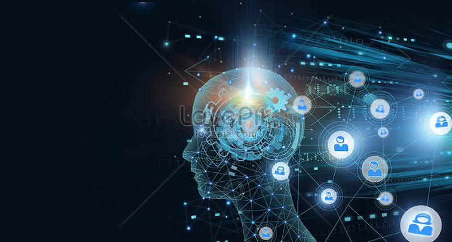

Types of Artificial Intelligence
1. Reactive machines
The most basic types of AI systems are purely reactive, and have the ability neither to form memories nor to use past experiences to inform current decisions. Deep Blue, IBM’s chess-playing supercomputer, which beat international grandmaster Garry Kasparov in the late 1990s, is the perfect example of this type of machine.
Deep Blue can identify the pieces on a chess board and know how each moves. It can make predictions about what moves might be next for it and its opponent. And it can choose the most optimal moves from among the possibilities.
But it doesn’t have any concept of the past, nor any memory of what has happened before. Apart from a rarely used chess-specific rule against repeating the same move three times, Deep Blue ignores everything before the present moment. All it does is look at the pieces on the chess board as it stands right now, and choose from possible next moves.
This type of intelligence involves the computer perceiving the world directly and acting on what it sees. It doesn’t rely on an internal concept of the world. In a seminal paper, AI researcher Rodney Brooks argued that we should only build machines like this. His main reason was that people are not very good at programming accurate simulated worlds for computers to use, what is called in AI scholarship a “representation” of the world.
The current intelligent machines we marvel at either have no such concept of the world, or have a very limited and specialized one for its particular duties. The innovation in Deep Blue’s design was not to broaden the range of possible movies the computer considered. Rather, the developers found a way to narrow its view, to stop pursuing some potential future moves, based on how it rated their outcome. Without this ability, Deep Blue would have needed to be an even more powerful computer to actually beat Kasparov.
Similarly, Google’s AlphaGo, which has beaten top human Go experts, can’t evaluate all potential future moves either. Its analysis method is more sophisticated than Deep Blue’s, using a neural network to evaluate game developments.
These methods do improve the ability of AI systems to play specific games better, but they can’t be easily changed or applied to other situations. These computerized imaginations have no concept of the wider world – meaning they can’t function beyond the specific tasks they’re assigned and are easily fooled.
They can’t interactively participate in the world, the way we imagine AI systems one day might. Instead, these machines will behave exactly the same way every time they encounter the same situation. This can be very good for ensuring an AI system is trustworthy: You want your autonomous car to be a reliable driver. But it’s bad if we want machines to truly engage with, and respond to, the world. These simplest AI systems won’t ever be bored, or interested, or sad.
2. Limited memory
This Type II class contains machines can look into the past. Self-driving cars do some of this already. For example, they observe other cars’ speed and direction. That can’t be done in a just one moment, but rather requires identifying specific objects and monitoring them over time.
These observations are added to the self-driving cars’ preprogrammed representations of the world, which also include lane markings, traffic lights and other important elements, like curves in the road. They’re included when the car decides when to change lanes, to avoid cutting off another driver or being hit by a nearby car.
But these simple pieces of information about the past are only transient. They aren’t saved as part of the car’s library of experience it can learn from, the way human drivers compile experience over years behind the wheel.
So how can we build AI systems that build full representations, remember their experiences and learn how to handle new situations? Brooks was right in that it is very difficult to do this. My own research into methods inspired by Darwinian evolution can start to make up for human shortcomings by letting the machines build their own representations.
3. Theory of mind
We might stop here, and call this point the important divide between the machines we have and the machines we will build in the future. However, it is better to be more specific to discuss the types of representations machines need to form, and what they need to be about.
Machines in the next, more advanced, class not only form representations about the world, but also about other agents or entities in the world. In psychology, this is called “theory of mind” – the understanding that people, creatures and objects in the world can have thoughts and emotions that affect their own behavior.
This is crucial to how we humans formed societies, because they allowed us to have social interactions. Without understanding each other’s motives and intentions, and without taking into account what somebody else knows either about me or the environment, working together is at best difficult, at worst impossible.
If AI systems are indeed ever to walk among us, they’ll have to be able to understand that each of us has thoughts and feelings and expectations for how we’ll be treated. And they’ll have to adjust their behavior accordingly.
4. Self-awareness
The final step of AI development is to build systems that can form representations about themselves. Ultimately, we AI researchers will have to not only understand consciousness, but build machines that have it.
This is, in a sense, an extension of the “theory of mind” possessed by Type III artificial intelligences. Consciousness is also called “self-awareness” for a reason. (“I want that item” is a very different statement from “I know I want that item.”) Conscious beings are aware of themselves, know about their internal states, and are able to predict feelings of others. We assume someone honking behind us in traffic is angry or impatient, because that’s how we feel when we honk at others. Without a theory of mind, we could not make those sorts of inferences.
While we are probably far from creating machines that are self-aware, we should focus our efforts toward understanding memory, learning and the ability to base decisions on past experiences. This is an important step to understand human intelligence on its own. And it is crucial if we want to design or evolve machines that are more than exceptional at classifying what they see in front of them.
